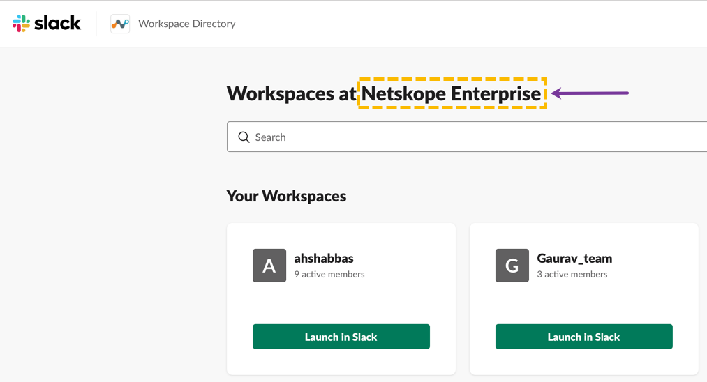

Configure Slack Enterprise for API-enabled Protection
Note
Check with Slack help desk if your edition supports the Slack Discovery API. If so, you will have to deploy a Slack Enterprise Netskope instance even for non-enterprise editions of Slack. Shared channels are currently not supported.
To configure Slack Enterprise for API-enabled Protection, you need to authorize Netskope as a web application client to access your Slack Enterprise instance.
Configure Netskope Access for Slack Enterprise
To authorize Netskope to access your Slack Enterprise instance:
Log in to your Slack Enterprise Grid account as an organization owner.
Note down the <enterprise name> at the top of the home page. The enterprise name will be required during the Slack Enterprise app instance setup in the Netskope UI.
Log in to the Netskope tenant UI:
https://<tenant hostname>.goskope.comand go to Settings > API-enabled Protection > SaaS.Select the Slack Enterprise icon, and then click Setup Instance.
The Setup Instance window opens. Enter the following details:
In the Instance Name field, enter the Slack enterprise name as noted in step 2.
In the Instance Type field, keep the API-enabled Protection check box selected. You can select additional check boxes based on your requirement.
If you intend to monitor Slack Enterprise audit events, select the Audit Reports checkbox.
Note
You can view the audit events in Skope IT > EVENTS > Application Events.
Audit events are supported for Slack Enterprise accounts only. Slack Team and Compliance accounts do not support audit events.
If you have already set up a Slack Enterprise app instance and intend to monitor audit events, you must re-grant access.
If you intend to preserve violating files for legal purposes, you can select the Legal Hold checkbox. Once a file is legally held, you can contact the owner or download the file from the Incidents > Legal Hold page.
Note
For a new and existing Slack for Enterprise instance, if you enable the Legal Hold, you must click Grant Access followed by Grant Bot.
If you intend to quarantine violating files and messages, you can select the Quarantine checkbox. Once a file/message is quarantined, you can contact the owner, download, block, or restore the file/message from the Incidents > Quarantine page.
Note
For a new and existing Slack for Enterprise instance, if you enable the Quarantine, you must click Grant Access followed by Grant Bot.
If you intend to quarantine a malware file, you can select the Malware checkbox. You can select this option to scan any file attachment for malware in private, public channels, direct messages, and group chats. Once detected, you can quarantine the malware file. To do so, navigate to Settings > Threat Protection > API-enabled Protection. Ensure that malware scanning is enabled for the Slack for Enterprise app instance and under Settings, select a quarantine profile*. To view files affected by malware, navigate to Incidents > Malware.
Note
Malware detection is not supported for chat messages and snippets.
*You cannot use the Slack for Enterprise quarantine profile as the destination for malware detected files. However, if you have set up any API-enabled Protection-supported storage apps, you can leverage the quarantine profile of these apps. To set up a quarantine profile for any of the supported storage apps, refer to the documentation located here.
In the Enter email of organization owner of the workspace field, enter the email address of organization owner of the Slack Enterprise.
In the Enter comma separated list of internal domains field, enter a comma separated list of domains which you want to treat as internal to your organization. This is used for user categorization and file exposure calculations.
In the Enter workspace name for Netskope Bot Installation and Legal Hold content field, enter the name of a Slack workspace which is part of the Slack Enterprise Grid. This installs a bot using this workspace in the enterprise. Once installed, the Netskope Bot sends notifications about policy violations, alerts, and creates:
a private group called netskope_legalhold and store a copy of the violated content for legal purposes.
a private group called netskope_quarantine and store a copy (tombstone) of the violated content as part of the quarantine action.
Note
Any workspace from your Slack Enterprise can be used for Netskope Bot. The purpose of Netskope Bot is:
to send direct messages to users or organization owner in the event of a policy match.
to create private groups netskope_legalhold and netskope_quarantine and store a copy of the violated content as part of the legal hold and quarantine actions, respectively. These groups are accessible only by the instance administrator.
Adding the bot to any of the workspaces installs the bot to the organization. Hence allowing the bot to send direct messages to any user regardless of the workspace the user belongs to.
Click Save.
Ensure that you are logged in to your Slack Enterprise Grid account as an organization owner in one of the tabs of your browser.
Note
The organization owner has to be logged in to the enterprise account and use the same browser session to grant access in the Netskope UI.
In the API-enabled Protection Instances page, click Grant Access for the app instance you just created.
A new pop-up window opens asking you to authorize Netskope to access and manage all your organization's messages and files.
Click Authorize.
Note
If you get an error message similar to "team_not_authorized", ensure that you have enabled the Slack Discovery API on your Slack Enterprise account. Contact Slack support to enable this API.
On successful authorization, click Close.
Refresh your browser and you will see a green check icon next to the instance name.
On successful authorization of the Slack for Enterprise app, the Grant Bot link is activated beside Grant Access. To have the Netskope Bot send notifications about policy violations and legal hold content:
Ensure that you are logged in to your Slack Enterprise Grid account as an organization owner and launch the workspace that you added in step 4e.
Note
The organization owner must be logged in to the workspace and use the same browser session to grant bot access in the Netskope UI.
In the API-enabled Protection Instances page, click Grant Bot for the app instance you just granted access.
A new pop-up window opens asking you to authorize Netskope to access and modify information about your direct messages and send messages on behalf of the Slack enterprise account.
Click Authorize.
On successful authorization, click Close.
Slack installs the Netskope app and sends an email to the organization owner. To verify the Netskope app is installed:
Log in to your Slack Enterprise Grid account as an organization owner.
On the top-right, click Manage Organizations.
On the left navigation pane, click Organizations > Apps.
The Netskope app should be displayed on the Apps page.
Once the instance setup is complete, you can proceed to create policies.